|
Jonghae Park I'm a research scientist at Google DeepMind in San Francisco, where I lead a small team that mostly works on NeRF. At Google I've worked on Glass, Lens Blur, HDR+, VR, Portrait Mode, Portrait Light, Maps, and Shopping. I did my PhD at UC Berkeley, where I was advised by Jitendra Malik. I've received the PAMI Young Researcher Award. |

|
ResearchI'm interested in computer vision, deep learning, generative AI, and image processing. Most of my research is about inferring the physical world (shape, motion, color, light, etc) from images, usually with radiance fields. Some papers are highlighted. |


|
EVER: Exact Volumetric Ellipsoid Rendering for Real-time View Synthesis
Alexander Mai, Peter Hedman, George Kopanas, Dor Verbin, David Futschik, Qiangeng Xu, Falko Kuester, Jonathan T. Barron, Yinda Zhang ICCV, 2025 (Oral Presentation) project page / arXiv Raytracing constant-density ellipsoids yields more accurate and flexible radiance fields than splatting Gaussians, and still runs in real-time. |

|
CAT4D: Create Anything in 4D with Multi-View Video Diffusion Models
Rundi Wu, Ruiqi Gao, Ben Poole, Alex Trevithick, Changxi Zheng, Jonathan T. Barron, Aleksander Holynski CVPR, 2025 (Oral Presentation) project page / arXiv An approach for turning a video into a 4D radiance field that can be rendered in real-time. When combined with a text-to-video model, this enables text-to-4D. |
|
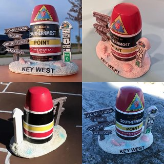
|
Generative Multiview Relighting for
3D Reconstruction under Extreme Illumination Variation
Hadi Alzayer, Philipp Henzler, Jonathan T. Barron, Jia-Bin Huang, Pratul P. Srinivasan, Dor Verbin CVPR, 2025 (Highlight) project page / arXiv Images taken under extreme illumination variation can be made consistent with diffusion, and this enables high-quality 3D reconstruction. |
|
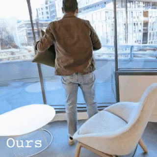
|
SimVS: Simulating World Inconsistencies for Robust View Synthesis
Alex Trevithick, Roni Paiss, Philipp Henzler, Dor Verbin, Rundi Wu, Hadi Alzayer, Ruiqi Gao, Ben Poole, Jonathan T. Barron, Aleksander Holynski, Ravi Ramamoorthi, Pratul P. Srinivasan CVPR, 2025 project page / arXiv Simulating the world with video models lets you make inconsistent captures consistent. |

|
A Power Transform
Jonathan T. Barron arXiv, 2025 tweet / arXiv A slight tweak to the Box-Cox power transform generalizes a variety of curves, losses, kernel functions, probability distributions, bump functions, and neural network activation functions. |

|
CAT3D: Create Anything in 3D with Multi-View Diffusion Models
Ruiqi Gao*, Aleksander Holynski*, Philipp Henzler, Arthur Brussee, Ricardo Martin Brualla, Pratul P. Srinivasan, Jonathan T. Barron, Ben Poole* NeurIPS, 2024 (Oral Presentation) project page / arXiv A single model built around diffusion and NeRF that does text-to-3D, image-to-3D, and few-view reconstruction, trains in 1 minute, and renders at 60FPS in a browser. |

|
NeRF-Casting: Improved View-Dependent Appearance with Consistent Reflections
Dor Verbin, Pratul Srinivasan, Peter Hedman, Benjamin Attal, Ben Mildenhall, Richard Szeliski, Jonathan T. Barron SIGGRAPH Asia, 2024 project page / arXiv Carefully casting reflection rays lets us synthesize photorealistic specularities in real-world scenes. |

|
Flash Cache: Reducing Bias in Radiance Cache Based Inverse Rendering
Benjamin Attal, Dor Verbin, Ben Mildenhall, Peter Hedman, Jonathan T. Barron, Matthew O'Toole, Pratul P. Srinivasan ECCV, 2024 (Oral Presentation) project page / arXiv A more physically-accurate inverse rendering system based on radiance caching for recovering geometry, materials, and lighting from RGB images of an object or scene. |

|
Nuvo: Neural UV Mapping for Unruly 3D Representations
Pratul Srinivasan, Stephan J. Garbin, Dor Verbin, Jonathan T. Barron, Ben Mildenhall ECCV, 2024 project page / video / arXiv Neural fields let you recover editable UV mappings for the challenging geometries produced by NeRF-like models. |

|
Binary Opacity Grids: Capturing Fine Geometric Detail for Mesh-Based View Synthesis
Christian Reiser, Stephan J. Garbin, Pratul Srinivasan, Dor Verbin, Richard Szeliski, Ben Mildenhall, Jonathan T. Barron, Peter Hedman*, Andreas Geiger* SIGGRAPH, 2024 project page / video / arXiv Applying anti-aliasing to a discrete opacity grid lets you render a hard representation into a soft image, and this enables highly-detailed mesh recovery. |

|
SMERF: Streamable Memory Efficient Radiance Fields for Real-Time Large-Scene Exploration
Daniel Duckworth*, Peter Hedman*, Christian Reiser, Peter Zhizhin, Jean-François Thibert, Mario Lučić, Richard Szeliski, Jonathan T. Barron SIGGRAPH, 2024 (Honorable Mention) project page / video / arXiv Distilling a Zip-NeRF into a tiled set of MERFs lets you fly through radiance fields on laptops and smartphones at 60 FPS. |

|
Eclipse: Disambiguating Illumination and Materials using Unintended Shadows
Dor Verbin, Ben Mildenhall, Peter Hedman, Jonathan T. Barron, Todd Zickler, Pratul Srinivasan CVPR, 2024 (Oral Presentation) project page / video / arXiv Shadows cast by unobserved occluders provide a high-frequency cue for recovering illumination and materials. |
|
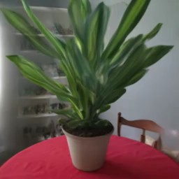
|
ReconFusion: 3D Reconstruction with Diffusion Priors
Rundi Wu*, Ben Mildenhall*, Philipp Henzler, Keunhong Park, Ruiqi Gao, Daniel Watson, Pratul P. Srinivasan, Dor Verbin, Jonathan T. Barron, Ben Poole, Aleksander Holynski* CVPR, 2024 project page / arXiv Using a multi-image diffusion model as a regularizer lets you recover high-quality radiance fields from just a handful of images. |
|
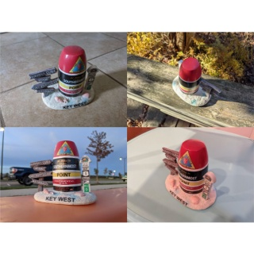
|
SHINOBI: Shape and Illumination using Neural Object Decomposition via BRDF Optimization In-the-Wild
Andreas Engelhardt, Amit Raj, Mark Boss, Yunzhi Zhang, Abhishek Kar, Yuanzhen Li, Deqing Sun, Ricardo Martin Brualla, Jonathan T. Barron, Hendrik P.A. Lensch, Varun Jampani CVPR, 2024 project page / video / arXiv A class-agnostic inverse rendering solution for turning in-the-wild images of an object into a relightable 3D asset. |
|
|
InterNeRF: Scaling Radiance Fields via Parameter Interpolation
Clinton Wang, Peter Hedman, Polina Golland, Jonathan T. Barron, Daniel Duckworth CVPR Neural Rendering Intelligence, 2024 arXiv Parameter interpolation enables high-quality large-scale scene reconstruction and out-of-core training and rendering. |

|
State of the Art on Diffusion Models for Visual Computing
Ryan Po, Wang Yifan, Vladislav Golyanik, Kfir Aberman, Jonathan T. Barron, Amit H. Bermano, Eric Ryan Chan, Tali Dekel, Aleksander Holynski, Angjoo Kanazawa, C. Karen Liu, Lingjie Liu, Ben Mildenhall, Matthias Nießner, Björn Ommer, Christian Theobalt, Peter Wonka, Gordon Wetzstein Eurographics State-of-the-Art Report, 2024 A survey of recent progress in diffusion models for images, videos, and 3D. |

|
CamP: Camera Preconditioning for Neural Radiance Fields
Keunhong Park, Philipp Henzler, Ben Mildenhall, Jonathan T. Barron, Ricardo Martin-Brualla SIGGRAPH Asia, 2023 project page / arXiv Preconditioning based on camera parameterization helps NeRF and camera extrinsics/intrinsics optimize better together. |

|
Zip-NeRF: Anti-Aliased Grid-Based Neural Radiance Fields
Jonathan T. Barron, Ben Mildenhall, Dor Verbin, Pratul Srinivasan, Peter Hedman ICCV, 2023 (Oral Presentation, Best Paper Finalist) project page / video / arXiv Combining mip-NeRF 360 and grid-based models like Instant NGP lets us reduce error rates by 8%–77% and accelerate training by 24x. |
|
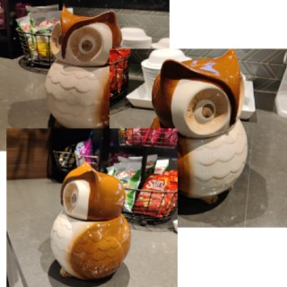
|
DreamBooth3D: Subject-Driven Text-to-3D Generation
Amit Raj, Srinivas Kaza, Ben Poole, Michael Niemeyer, Nataniel Ruiz, Ben Mildenhall, Shiran Zada, Kfir Aberman, Michael Rubinstein, Jonathan T. Barron, Yuanzhen Li, Varun Jampani ICCV, 2023 project page / arXiv Combining DreamBooth (personalized text-to-image) and DreamFusion (text-to-3D) yields high-quality, subject-specific 3D assets with text-driven modifications |

|
BakedSDF: Meshing Neural SDFs for Real-Time View Synthesis
Lior Yariv*, Peter Hedman*, Christian Reiser, Dor Verbin, Pratul Srinivasan, Richard Szeliski, Jonathan T. Barron, Ben Mildenhall SIGGRAPH, 2023 project page / video / arXiv We use SDFs to bake a NeRF-like model into a high quality mesh and do real-time view synthesis. |

|
MERF: Memory-Efficient Radiance Fields for Real-time View Synthesis in Unbounded Scenes
Christian Reiser, Richard Szeliski, Dor Verbin, Pratul Srinivasan, Ben Mildenhall, Andreas Geiger, Jonathan T. Barron, Peter Hedman SIGGRAPH, 2023 project page / video / arXiv We use volumetric rendering with a sparse 3D feature grid and 2D feature planes to do real-time view synthesis. |
|
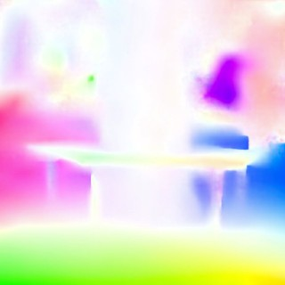

|
AligNeRF: High-Fidelity Neural Radiance Fields via Alignment-Aware Training
Yifan Jiang, Peter Hedman, Ben Mildenhall, Dejia Xu, Jonathan T. Barron, Zhangyang Wang, Tianfan Xue CVPR, 2023 project page / arXiv Accounting for misalignment due to scene motion or calibration errors improves NeRF reconstruction quality. |
|
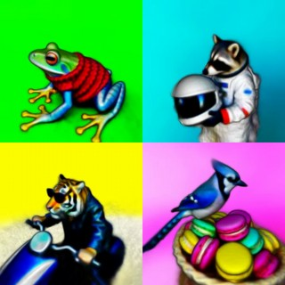
|
DreamFusion: Text-to-3D using 2D Diffusion
Ben Poole, Ajay Jain, Jonathan T. Barron, Ben Mildenhall ICLR, 2023 (Oral Presentation, Outstanding Paper Award) project page / arXiv / gallery We optimize a NeRF from scratch using a pretrained text-to-image diffusion model to do text-to-3D generative modeling. |
|
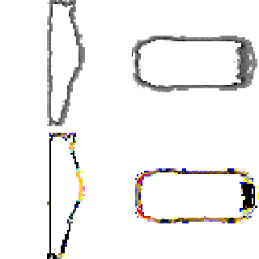
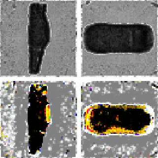
|
Learning a Diffusion Prior for NeRFs
Guandao Yang, Abhijit Kundu, Leonidas J. Guibas, Jonathan T. Barron, Ben Poole ICLR Workshop, 2023 Training a diffusion model on grid-based NeRFs lets you (conditionally) sample NeRFs. |
 
|
MIRA: Mental Imagery for Robotic Affordances
Lin Yen-Chen, Pete Florence, Andy Zeng, Jonathan T. Barron, Yilun Du, Wei-Chiu Ma, Anthony Simeonov, Alberto Rodriguez, Phillip Isola CoRL, 2022 NeRF lets us synthesize novel orthographic views that work well with pixel-wise algorithms for robotic manipulation. |
 
|
SAMURAI: Shape And Material from Unconstrained Real-world Arbitrary Image Collections
Mark Boss, Andreas Engelhardt, Abhishek Kar, Yuanzhen Li, Deqing Sun, Jonathan T. Barron, Hendrik P. A. Lensch, Varun Jampani NeurIPS, 2022 project page / video / arXiv A joint optimization framework for estimating shape, BRDF, camera pose, and illumination from in-the-wild image collections. |
|
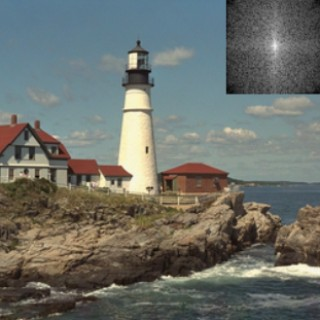

|
Polynomial Neural Fields for Subband Decomposition
Guandao Yang*, Sagie Benaim*, Varun Jampani, Kyle Genova, Jonathan T. Barron, Thomas Funkhouser, Bharath Hariharan, Serge Belongie NeurIPS, 2022 Representing neural fields as a composition of manipulable and interpretable components lets you do things like reason about frequencies and scale. |
 
|
Fast and High-Quality Image Denoising via Malleable Convolutions
Yifan Jiang, Bartlomiej Wronski, Ben Mildenhall, Jonathan T. Barron, Zhangyang Wang, Tianfan Xue ECCV, 2022 project page / arXiv We denoise images efficiently by predicting spatially-varying kernels at low resolution and using a fast fused op to jointly upsample and apply these kernels at full resolution. |
|
Color Constancy, Intrinsic Images, and Shape Estimation
Jonathan T. Barron, Jitendra Malik ECCV, 2012 supplement / bibtex / poster / video This paper is subsumed by SIRFS. |
|
|
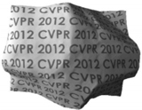

|
Shape, Albedo, and Illumination from a Single Image of an Unknown Object
Jonathan T. Barron, Jitendra Malik CVPR, 2012 supplement / bibtex / poster This paper is subsumed by SIRFS. |

|
A Category-Level 3-D Object Dataset: Putting the Kinect to Work
Allison Janoch, Sergey Karayev, Yangqing Jia, Jonathan T. Barron, Mario Fritz, Kate Saenko, Trevor Darrell ICCV 3DRR Workshop, 2011 bibtex / "smoothing" code We present a large RGB-D dataset of indoor scenes and investigate ways to improve object detection using depth information. |
| 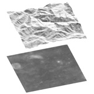 |
High-Frequency Shape and Albedo from Shading using Natural Image Statistics
Jonathan T. Barron, Jitendra Malik CVPR, 2011 bibtex This paper is subsumed by SIRFS. |

|
Discovering Efficiency in Coarse-To-Fine Texture Classification
Jonathan T. Barron, Jitendra Malik Technical Report, 2010 bibtex A model and feature representation that allows for sub-linear coarse-to-fine semantic segmentation. |

|
Parallelizing Reinforcement Learning
Jonathan T. Barron, Dave Golland, Nicholas J. Hay Technical Report, 2009 bibtex Markov Decision Problems which lie in a low-dimensional latent space can be decomposed, allowing modified RL algorithms to run orders of magnitude faster in parallel. |

|
Blind Date: Using Proper Motions to Determine the Ages of Historical Images
Jonathan T. Barron, David W. Hogg, Dustin Lang, Sam Roweis The Astronomical Journal, 136, 2008 Using the relative motions of stars we can accurately estimate the date of origin of historical astronomical images. |

|
Cleaning the USNO-B Catalog Through Automatic Detection of Optical Artifacts
Jonathan T. Barron, Christopher Stumm, David W. Hogg, Dustin Lang, Sam Roweis The Astronomical Journal, 135, 2008 We use computer vision techniques to identify and remove diffraction spikes and reflection halos in the USNO-B Catalog. In use at Astrometry.net |
Miscellanea |
|
Feel free to steal this website's source code. Do not scrape the HTML from this page itself, as it includes analytics tags that you do not want on your own website — use the github code instead. Also, consider using Leonid Keselman's Jekyll fork of this page. |